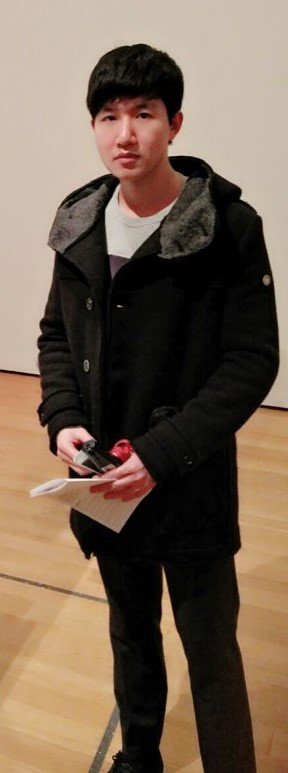

Portfolio
Hyung Min Kim
Github
Education:
- Saint Johns Prepatory High school, Collegeville, Minnesota
Class of 2015
- NYU Tandon School of Engineering, Brooklyn, New York
Bachelor of Computer Science
(Anticipated graduation: May 2019)
- LikeLion 2017, NYU, New York
Technical Skills:
- Computer Skills: MS Office, Logger Pro, LabVIEW, Python, C, C++, and AutoCAD
- Language Skills: Korean (Native), English (Fluent)
